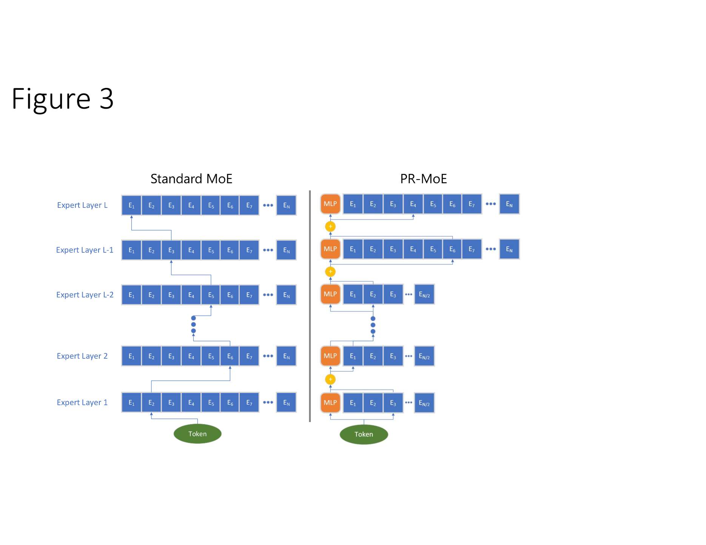
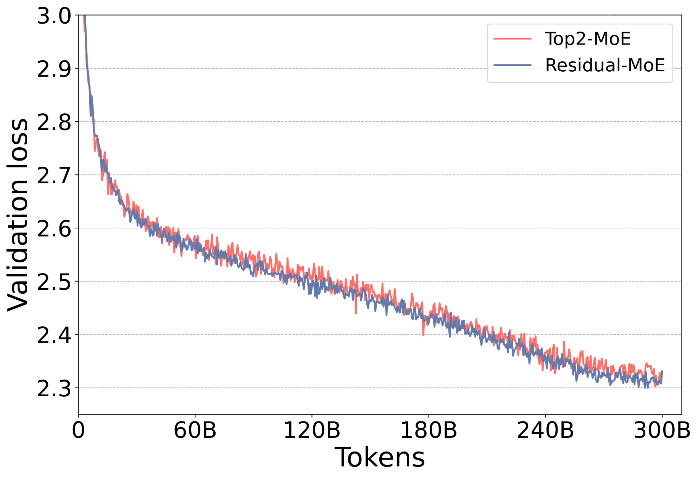
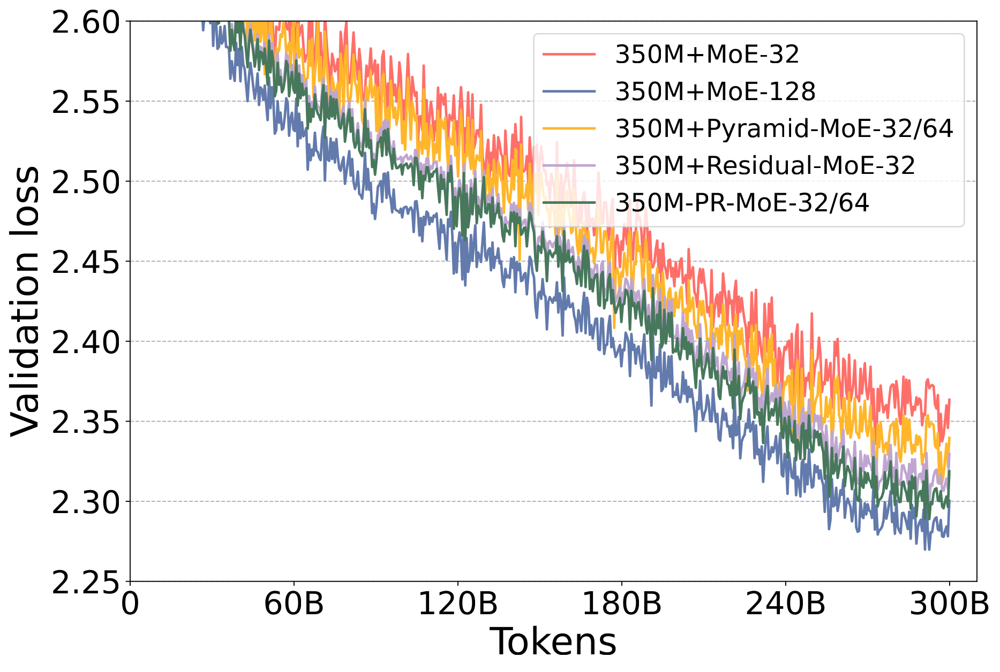
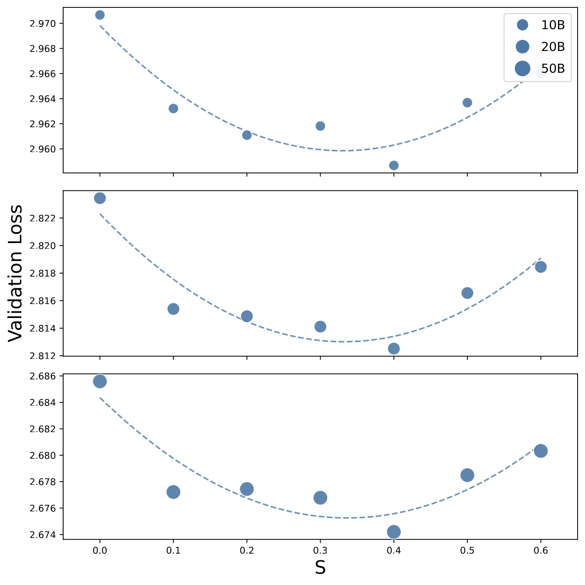
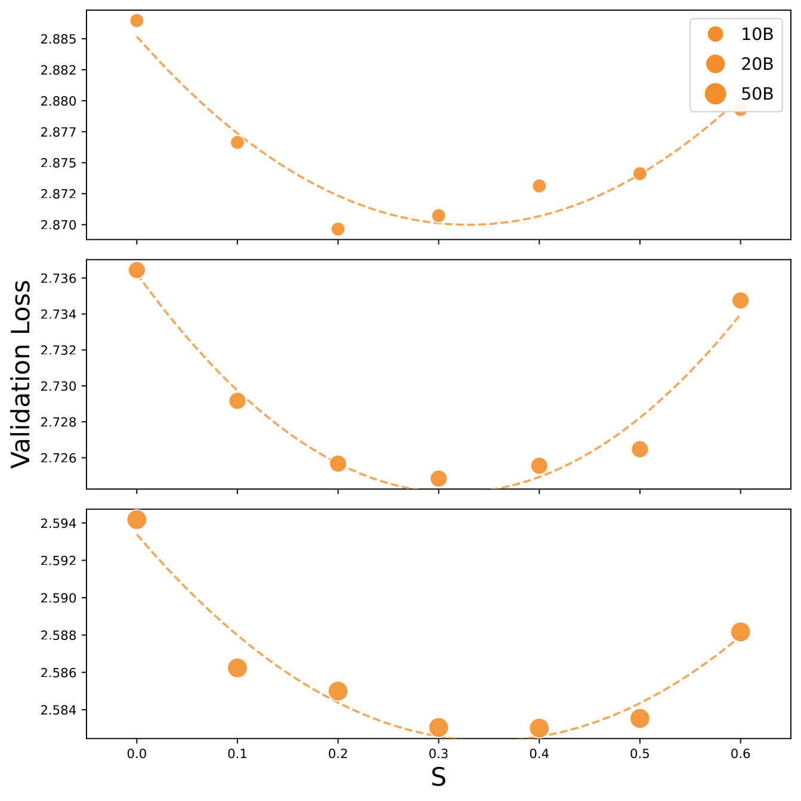
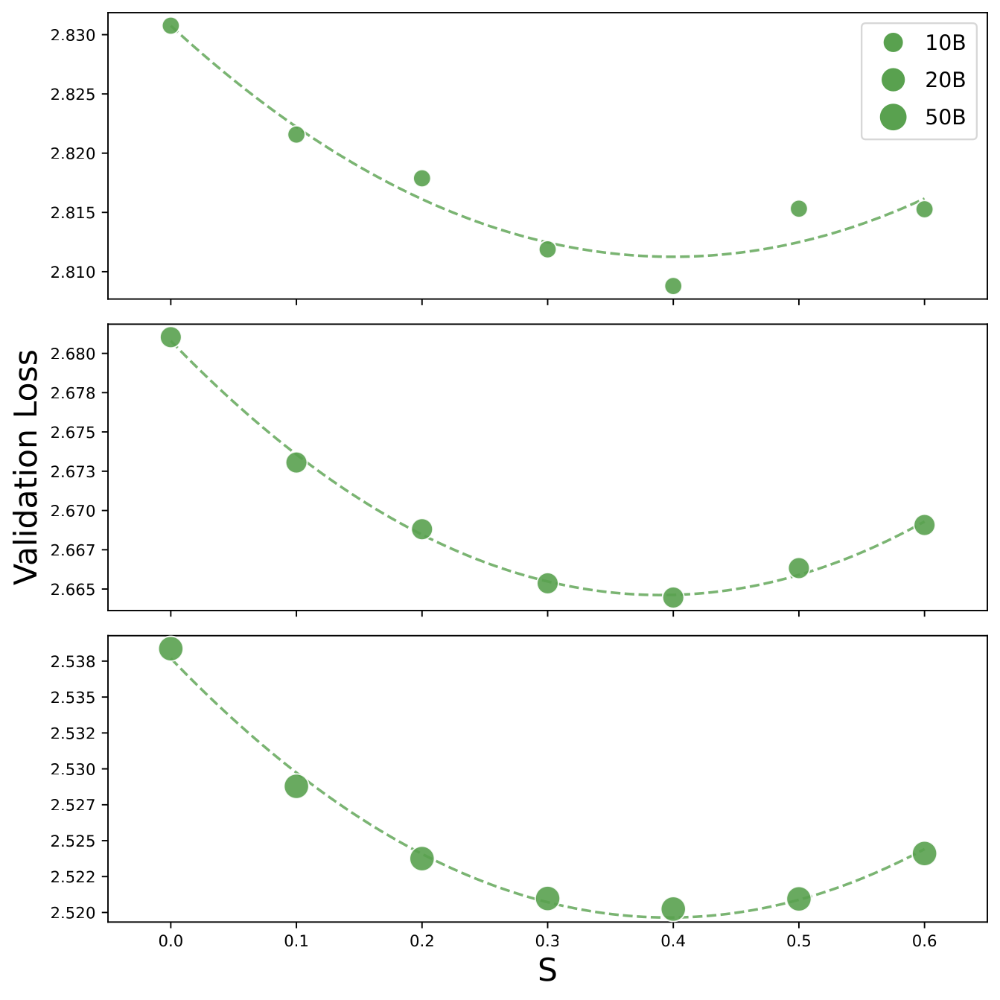
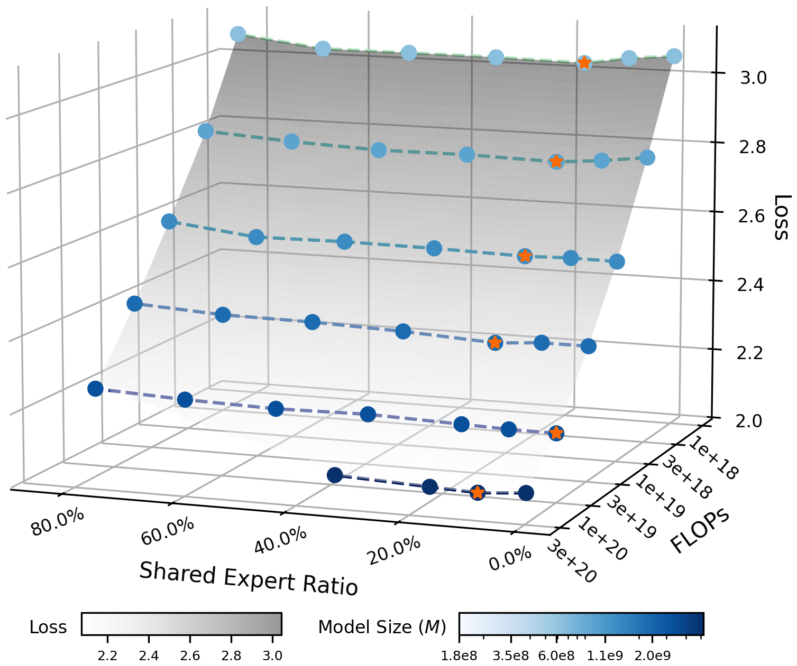
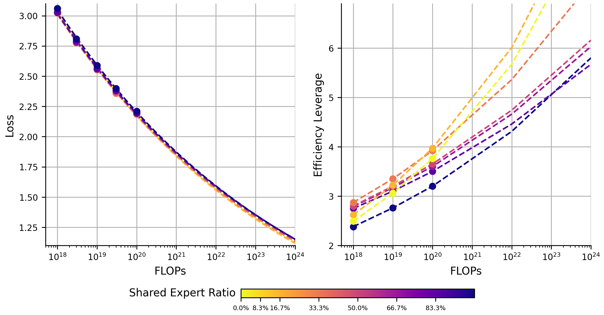
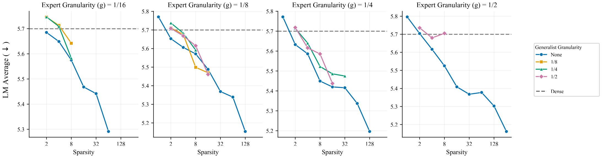

共享专家 : 路由专家比例
专题深度综述
核心结论 TL;DR
(腾讯+蚂蚁一致)
≈ 1–2 个共享专家
近乎一致的选择
共享专家有害
| 学派 | 主张 | 证据规模 | 代表 |
|---|---|---|---|
| 挺共享 · 主流 | 放少量(1–2 个)共享专家最优；0 共享次优；loss 关于 $S$ 呈 U 形 | 446 / 300+ 组受控实验，拟合 scaling law | DeepSeekMoE、腾讯混元、蚂蚁 Ling、UT Austin(理论) |
| 反共享 | 共享专家无收益甚至有害，应纯路由；真正重要的是专家数与粒度 | OLMoE 单点 / Meta 2000+ run | OLMoE、Meta(Zettlemoyer 组)、Qwen3(实践) |
先界定：什么是共享专家
共享专家(shared expert)，又称 residual / generalist expert，指 MoE 层中对每个 token 都始终激活的专家，与门控选出的路由专家(routed expert)的输出相加。直觉是让共享专家承载"所有 token 都需要的通用知识"，从而把路由专家解放出来去学专门化的知识，减少专家间冗余。
注意 $S$ 是激活口径的比例。你常说的 "1:6 / 1:8" 正是 $n_s : k$ —— DeepSeek-V3 是 1 共享 : 8 路由(即 $S=1/9\approx11\%$)，恰好落在两篇论文给出的最优区间内。
四阶段演进脉络
一 · 起源 (2022)：共享专家从哪来
DeepSpeed-MoE 提出 PR-MoE（Pyramid-Residual MoE），含两个独立创新，其中 Residual-MoE 就是今天共享专家的鼻祖。


核心设计与动机
- Residual expert： 把 MoE 专家当作 dense MLP 的"误差修正项"。提升泛化通常靠 (1) 加专家数(增显存) 或 (2) 用 top-2(多 33% 计算、通信量翻倍)。PR-MoE 的洞察：top-2 里"第二个专家"本质是在修正第一个的表示，那就把第一个固定为 dense、只路由第二个。
- Pyramid 结构（Phenomenon-I）： 对比"前半层用 MoE" vs "后半层用 MoE"，后者 loss 明显更低 → 深层更受益于更多专家，故后几层用 2× 专家、前层少。

二 · 标准化 (2024)：DeepSeekMoE 与第一次分歧
DeepSeekMoE 提出细粒度专家切分 + 共享专家隔离两大设计，并做了本领域第一次"共享专家数量"的受控消融。
共享比例消融（Section 4.4）
固定总参数 ≈2B、激活 ≈0.3B、100B tokens、4.3T FLOPs，在 64 个细粒度专家、固定总数与激活数下，把指定为共享的数量设为 1 / 2 / 4：
- 1/2/4 共享差异在噪声内（1.806~1.811），选 1 共享 : 3 激活路由 (1:3) 为默认。
- 但关掉共享专家后 loss 从 1.808 暴涨到 2.414 —— 强烈证明"有 vs 没有"共享专家差异巨大。
OLMoE-1B-7B（64 专家 top-8）。共享专家消融（Fig 6）：在激活/总参数与 FLOPs 完全相同下，对比"32 路由激活 4（无共享）" vs "31 路由 + 1 共享、激活 3 路由（仍激活 4 个）"。
- 结论：1 共享 + 3 路由 比 4 纯路由略差。 机制解释：把一个路由专家变共享，专家组合数从 $C_{32}^4{=}35{,}960$ 锐减到 $C_{31}^3{=}4{,}495$，损失约 90% 路由灵活性。
- 决策：OLMoE 弃用共享专家。
三 · Scaling Law 精确化 (2025)：两个团队各自把 U 形画了出来
这是本报告最重要的一节。两篇独立工作第一次系统扫描共享专家比例并拟合 scaling law，回答了 DeepSeekMoE 当年答不清的问题。
提出涵盖 5 个因子的联合 scaling law：$D$(数据)、$N$(总参)、$N_a$(激活参)、$G$(激活专家数)、$S$(共享比例)。这是首个把共享比例 $S$ 当独立变量纳入 scaling law 的工作。
实验设计
- 446 组受控实验。 拟合范围 $N\in[133\text{M},3.4\text{B}]$、$D\in[10\text{B},50\text{B}]$ tokens、$N_a\in[30\text{M},2.2\text{B}]$、$G\in[1,20]$、$S\in[0.0,0.7]$。验证扩展到 9B 总参 / 100B tokens / 256 专家。Dolma V1.7 数据，WSD 调度。
- 扫描 $S$： 在三组配置(Na240M-N1.2B、Na476M-N2.4B、Na793M-N4B)上把 $S$ 作为唯一自变量扫描。



核心结论
- 最优共享比例 $S_{\text{opt}}\approx0.31$，且独立于 $N、N_a、D$（二次极值点不随规模移动）。因谷底极平（偏差 <0.001），实用区间 [0.13, 0.31]。
- 推荐：最优 $G\approx7$ 时配 1 或 2 个共享专家。 同时最优粒度 $G_{\text{opt}}=\sqrt{f/e}\approx6.78$，与 DeepSeek-V3 / Kimi-K2 / Qwen3 的 $G{=}8$ 实践对齐。
- 共享专家必不可少（$S{=}0$ 显著次优）。
提出 Efficiency Leverage (EL) $= C_{\text{dense}}/C_{\text{moe}}$（达到同 loss 时 dense 与 MoE 的算力比，EL=2 即省一半算力），系统研究各架构维度如何影响 EL。共享比例定义同腾讯：$S = E_s/(E_a+E_s)$。
实验设计
- 训练 300+ 个模型，最大 28B 参数，FLOPs 预算 3e18~3e20。固定总规模、激活比、激活专家总数，用共享专家替换路由专家，$S$ 从 0%（全专精）扫到 83.3%（高度共享）。
- 验证模型 Ling-mini-beta（0.85B 激活）对比 6.1B dense，同 1T tokens，性能匹配但省 7 倍+ 算力。


核心结论
- U 形关系 + $S{=}0$ 次优（与腾讯一致）。
- "One Shared Expert" 法则： 大规模预训练设 1 个共享专家（最小非零比例）。
- 最优比例随算力轻微下降（16.7%→8.3%）；激活比越低 EL 越高（最优 ~0.8%）；最优粒度 8–12。
从统计估计理论证明共享专家为什么有用（非扫描数量）：
- 共享专家更省样本： 收敛率恒为 $O_P(n^{-1/4})$，不受过参数化影响；softmax 门控下路由专家可能慢得多。
- 归一化 sigmoid 门控(V3) 让路由专家收敛率提升到最快 $O_P(n^{-1/2})$ —— 为 V3 从 softmax 改 sigmoid 提供理论依据。
- 亲口把"最优共享专家数量"列为开放问题 —— 这个问题随后正是被腾讯/蚂蚁两篇回答的。
四 · 最新质疑 (2026)：Meta 的反方证据
迄今最大规模、最系统的 MoE 架构 sweep——2000+ 次预训练，同时解耦专家数、粒度、异构专家、共享专家(称 "generalist")、负载均衡、dropless 等所有维度。模型 7 档激活参数（10M–300M active），最大 6.6B 总参，token∶active≈20（Chinchilla 比例）。

核心结论（原文措辞）
- "shared experts, heterogeneous experts and load-balancing settings have small effects relative to expert count and granularity"。
- "shared 'generalist' experts… Neither improves over a well-configured homogeneous MoE, while generalists consistently hurt"（共享专家持续有害）。
- 简化配方： 只需关注专家数与粒度；按 active 参数定专家大小（最优粒度约 1/4），再加总专家数把总参填满显存——性能随总 MoE 参数单调上升，即便 active∶total 达 1∶128。
- 明确点名反驳 Zhao et al.(2025，即 2505.10860 一脉)"共享专家必需、最优激活专家≈7 为固定常数"的说法，认为那是过拟合特定 regime 的产物。
共享专家的变体与前沿探索
| 论文 | arXiv | 核心思路 |
|---|---|---|
| ScMoE（Shortcut-connected MoE） | 2404.05019 | 把共享/路由解耦为 shortcut，使通信与计算 100% overlap；训练/推理加速 1.49×/1.82×，质量相当。偏系统优化。 |
| UniPool（全局共享专家池） | 2605.06665 | 把"每层独立专家"改为全局共享专家池，池大小作为深度-scaling 超参；41.6%–66.7% 参数即可匹配 vanilla MoE。 |
| DASG-MoE（动态自适应共享） | 2509.10530 | 双尺度共享专家 + 层级自适应路由，动态选择专家层级（长序列建模）。 |
| Adaptive Shared Experts | 2510.00570 | 共享专家与稀疏专家联合归一化门控权重，实现可学习的共享参与度。 |
| FLAME-MoE（研究平台） | 2505.20225 | 开源研究平台，标配 2 共享 + 64 路由 top-8，提供全程 trace，可复现共享比例实验。 |
| 多语言 MoE 路由 | 2510.04694 | 实证：高资源语言更依赖共享专家，低资源依赖语言专属专家；中间层为"语言无关共享枢纽"。支持"共享承载通用知识"假说。 |
前沿模型配置全表：谁用了共享专家（按发布时间倒序）
下表汇总 41 个前沿 MoE 模型，按发布时间从新到旧排列。共享列标色：绿=1个 紫=2个 红=0个。数字优先取官方 config.json / 技术报告。⚠️=官方 preview 版，🟡=部分字段未公开。
| 发布 | 模型 | 总参 | 激活 | 激活率 | 路由专家 | 共享 | top-k | dense层 | 来源 |
|---|---|---|---|---|---|---|---|---|---|
| 2026-04 | Kimi-K2.6（Moonshot） | 1T | 32B | 3.2% | 384 | 1 | 8 | 1层 | HF moonshotai |
| 2026-04 ⚠️ | DeepSeek-V4-Pro（preview） | 1.6T | 49B | 3.1% | 384 | 1 | 6 | 未标* | HF deepseek-ai |
| 2026-04 ⚠️ | DeepSeek-V4-Flash（preview） | 284B | 13B | 4.6% | 256 | 1 | 6 | 未标* | HF deepseek-ai |
| 2026-04 | MiMo-V2.5（小米） | 310B | 15B | 4.8% | 256 | 0 | 8 | 1层 | HF XiaomiMiMo |
| 2026 H1 | Step-3.5-Flash（阶跃） | 196.8B | ~11B | 5.6% | 288 | 1 | 8 | 前2层 | HF stepfun-ai |
| 2026-02 | GLM-5（智谱） | 744B | 40B | 5.4% | 256 | 1 | 8 | 前3层 | HF zai-org / 2602.15763 |
| 2026-02 🟡 | Qwen3.5-397B-A17B | 397B | 17B | 4.3% | 512 | 1 | 10 | 混合 | GitHub QwenLM |
| 2026-02 | Ling / Ring-2.5-1T（蚂蚁） | 1T | ~50B | ~5% | 256 | 1 | 8 | 前4层 | HF inclusionAI |
| 2026-01 🟡 | ERNIE 5.0（百度） | 2.4T | 未公开 | — | 未公开 | — | — | — | arXiv 2602.04705 |
| 2025-10 | MiniMax-M2 | 230B | 10B | 4.37% | 256 | 0 | 8 | 无 | HF MiniMaxAI |
| 2025-09 | LongCat-Flash（美团） | 560B | ~27B 动态 | ~4.8% | 512 +256零计算 | 0* | 动态 | — | 2509.01322 |
| 2025-09 | Qwen3-Next-80B-A3B | 80B | 3B | 3.75% | 512 | 1 | 10 | 混合 | qwen.ai |
| 2025-09 | GLM-4.6 | 355B | 32B | 9% | 160 | 1 | 8 | 前3层 | GitHub zai-org |
| 2025-09 | DeepSeek-V3.2 | 671B | 37B | 5.5% | 256 | 1 | 8 | 前3层 | DeepSeek |
| 2025-07 | Kimi-K2 | 1T | 32B | 3.2% | 384 | 1 | 8 | 1层 | 2507.20534 |
| 2025-07 | GLM-4.5 | 355B | 32B | 9% | 160 | 1 | 8 | 前3层 | HF zai-org |
| 2025-07 | GLM-4.5-Air | 106B | 12B | 11.3% | 128 | 1 | 8 | 前几层 | z.ai docs |
| 2025-07 | Step-3（阶跃） | 321B | 38B | 11.8% | — | 1 | — | — | 2507.19427 |
| 2025-06 | ERNIE-4.5-300B-A47B | 300B | 47B | 15.7% | 64 | 2 | 6 | 异构 | 百度 ERNIE 4.5 TR |
| 2025-06 | Hunyuan-A13B（腾讯） | 80B | 13B | 16.3% | 64 | 1 | 8 | 有 | HF tencent |
| 2025-06 | dots.llm1（小红书） | 142B | 14B | 9.9% | 128 | 2 | 6 | 无 | 2506.05767 |
| 2025-06 | MiniMax-M1 | 456B | 45.9B | 10.1% | 32 | 0 | 2 | 混合 | MiniMax-M1 |
| 2025-04 | Llama 4 Scout | 109B | 17B | 15.6% | 16 | 1 | 1 | 隔层 | Meta blog |
| 2025-04 | Llama 4 Maverick | 400B | 17B | 4.3% | 128 | 1 | 1 | 隔层 | Meta blog |
| 2025-04 ⚠️ | Llama 4 Behemoth（未发布） | ~2T | 288B | ~14% | 16 | 1 | 1 | 隔层 | Meta |
| 2025-04 | Qwen3-235B-A22B | 235B | 22B | 9.4% | 128 | 0 | 8 | 无 | Qwen3 report |
| 2025-04 | Qwen3-30B-A3B | 30B | 3B | 10% | 128 | 0 | 8 | 无 | Qwen3 report |
| 2025-01 | MiniMax-Text-01 | 456B | 45.9B | 10.1% | 32 | 0 | 2 | 混合 | MiniMax-01 |
| 2024-12 | DeepSeek-V3 / 3.1 | 671B | 37B | 5.5% | 256 | 1 | 8 | 前3层 | 2412.19437 |
| 2024-11 | Hunyuan-Large | 389B | 52B | 13.4% | 16 | 1 | 1 | — | 2411.02265 |
| 2024-09 | OLMoE | 6.9B | 1.3B | 18.8% | 64 | 0 | 8 | 无 | 2409.02060 |
| 2024-08 | Phi-3.5-MoE | 42B | 6.6B | 15.7% | 16 | 0 | 2 | 无 | HF microsoft |
| 2024-08 | Jamba-1.5-Large | 398B | 98B | 24.6% | 16 | 0 | 2 | Mamba混合 | AI21 |
| 2024-06 | Qwen2-57B-A14B | 57B | 14B | 24.6% | 64 | 8 | 8 | 无 | 2407.10671 |
| 2024-06 | Skywork-MoE | 146B | 22B | 15% | 16 | 0 | 2 | — | 2406.06563 |
| 2024-05 | DeepSeek-V2 | 236B | 21B | 8.9% | 160 | 2 | 6 | 前1层 | 2405.04434 |
| 2024-04 | Mixtral 8×22B | 141B | 39B | 27.7% | 8 | 0 | 2 | 无 | Mistral |
| 2024-04 | Snowflake Arctic | 480B | 17B | 3.5% | 128 | dense残差 | 2 | 10B dense | Snowflake |
| 2024-03 | DBRX | 132B | 36B | 27.3% | 16 | 0 | 4 | 无 | Databricks |
| 2024-03 | Grok-1（xAI） | 314B | ~79B | 25% | 8 | 0 | 2 | 无 | xAI OSS |
| 2023-12 | Mixtral 8×7B | 46.7B | 12.9B | 27.6% | 8 | 0 | 2 | 无 | 2401.04088 |
* LongCat-Flash 无传统固定共享专家，改用 256 个"零计算专家"(zero-computation/identity experts) 实现按 token 难度动态激活，共享语义由 ScMoE 快捷连接承担。
从配置表读出的四条规律（含 2026 最新趋势）
- "1 个共享专家"已成 2026 绝对主流。 2026 年新发布的 Kimi-K2.6、DeepSeek-V4-Pro、GLM-5、Qwen3.5、Ling-2.5、Step-3.5 全部采用 1 个共享专家——与腾讯/蚂蚁 scaling law 的"One Shared Expert"法则完全吻合。激活率也集体降到 3%–5.5% 的极稀疏区间。
- Qwen 阵营完成了反转。 早期 Qwen3(235B/30B) 坚持0 共享，但 Qwen3-Next(2025-09) 起改用 1 共享，到 Qwen3.5(2026-02) 延续。这是"反共享"派最有代表性的实验室倒戈到挺共享，与两篇 scaling law 的发表时间吻合。
- 仍有坚定的"0 共享"派。 MiniMax(M1/M2)、MiMo-V2.5(小米)、OLMoE 维持纯路由；LongCat(美团) 则走第三条路——用 256 个零计算专家做动态激活，绕开固定共享的设计。
- 共享与激活率独立。 用共享专家的模型激活率从 3.1%(DeepSeek-V4) 到 16%(Hunyuan-A13B) 都有；0 共享的也跨 4%–28%。两个维度互不绑定。
deepseek-ai/DeepSeek-V4-Pro 与 -Flash），model card 首句即"We present a preview version of DeepSeek-V4 series"，故非最终定版但已可用。两者 config 均为 n_shared_experts=1（Pro：61 层/384 路由/top-6；Flash：43 层/256 路由/top-6），且 config 中无 first_k_dense_replace 键（dense 层数未声明，标"未标*"）。Llama 4 Behemoth 未正式发布。🟡 ERNIE 5.0 真实发布(2.4T 全模态)但专家配置官方未公开；Qwen3.5-397B 的 512+1 数据据 Qwen3-Next 架构沿用(repo gated)。Kimi 演进路径为 K2→K2.5→K2.6（非 K3）。其余字段均取自一手 config.json / 官方技术报告。截至 2026-06，DeepSeek-V4 正式版、dots.llm2、MiniMax-M3 等或在传闻阶段、配置未定。综合裁决
1. 直接回答你的 "1:6 / 1:8"
- 你说的比例是激活口径 $n_s:k$。DeepSeek-V3 = 1:8（$S{=}1/9\approx11\%$）、Kimi-K2 = 1:8、DeepSeekMoE-16B = 2:6 = 1:3（$S{=}25\%$）。这些都精确落在两篇 scaling law 论文给出的最优区间 8%–31% 内。
- 换算成两篇论文的 $S=n_s/G$：1:6 → $S{=}1/7\approx14\%$，1:8 → $S{=}1/9\approx11\%$，正好在谷底。所以你记的 1:6~1:8 不仅真实，而且就是当前理论与工业共识的最优值。
2. "几个共享专家最优"——现在有答案了
3. 但要知道反方证据
4. 给实践者的最终配方
- 默认放 1 个共享专家（$S\approx10\%$–$15\%$）——对齐 2025 全部前沿大模型与两篇 scaling law。
- 粒度 $G$ 取 7–12（即 top-k 约 6–11 个细粒度路由专家 + 1 共享），激活率 5%–10%。
- 若你的设定是小模型 / 极细粒度 / 远超 compute-optimal 的过训，请用"等激活数替换"做 0 vs 1 vs 2 共享的消融——OLMoE/Meta 的反例提示此时共享可能无益。
- 不要放很多共享专家（>2 或 $S{>}31\%$）——U 形右半段 loss 会回升，且挤占路由组合灵活性。
论文出处
★★ 共享比例 Scaling Law（本报告核心新增）
- ★★ Towards a Comprehensive Scaling Law of MoE（腾讯混元）— arXiv 2509.23678
- ★★ Towards Greater Leverage: Scaling Laws for Efficient MoE（蚂蚁 Ling）— arXiv 2507.17702
起源 · 标准化 · 理论 · 质疑
- DeepSpeed-MoE / PR-MoE（共享专家起源）— arXiv 2201.05596
- DeepSeekMoE（标准化 + 首次消融）— arXiv 2401.06066
- OLMoE（反例：0 共享）— arXiv 2409.02060
- On DeepSeekMoE: Statistical Benefits（理论辩护）— arXiv 2505.10860
- ★ Slicing and Dicing（Meta，最新质疑）— arXiv 2605.11689
变体 / 相关
- ScMoE — 2404.05019 · FLAME-MoE — 2505.20225 · UniPool — 2605.06665 · DASG-MoE — 2509.10530 · Adaptive Shared Experts — 2510.00570 · 多语言路由 — 2510.04694